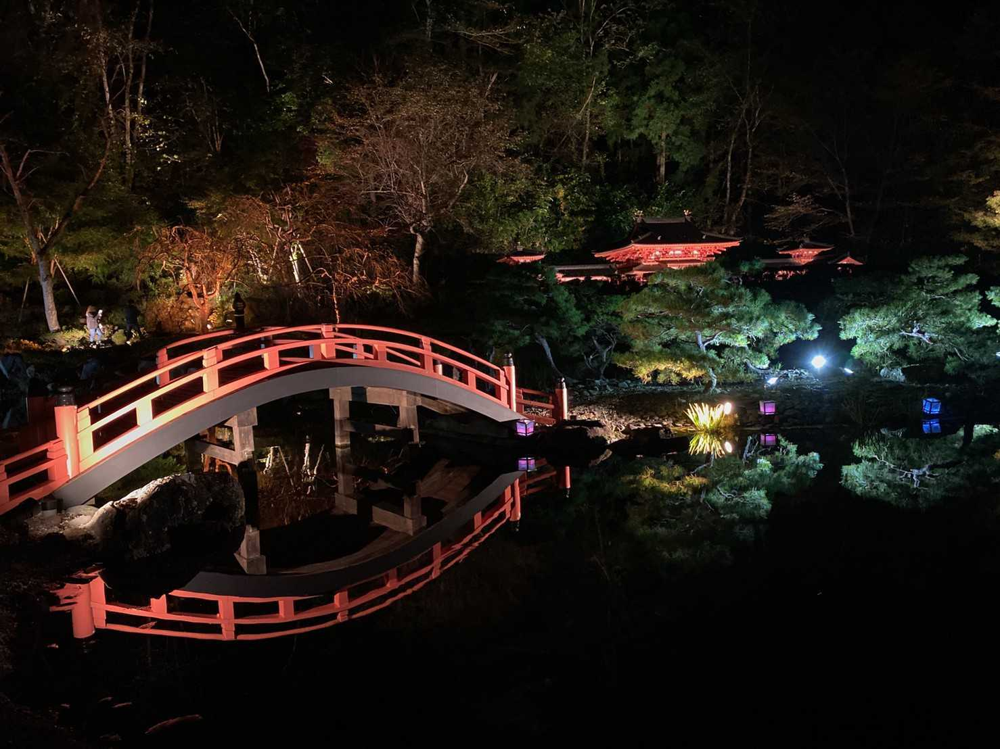
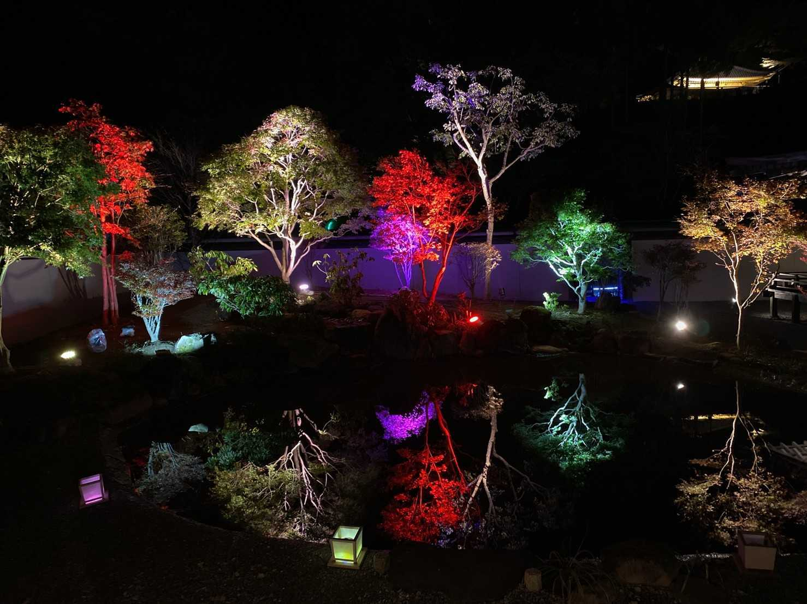
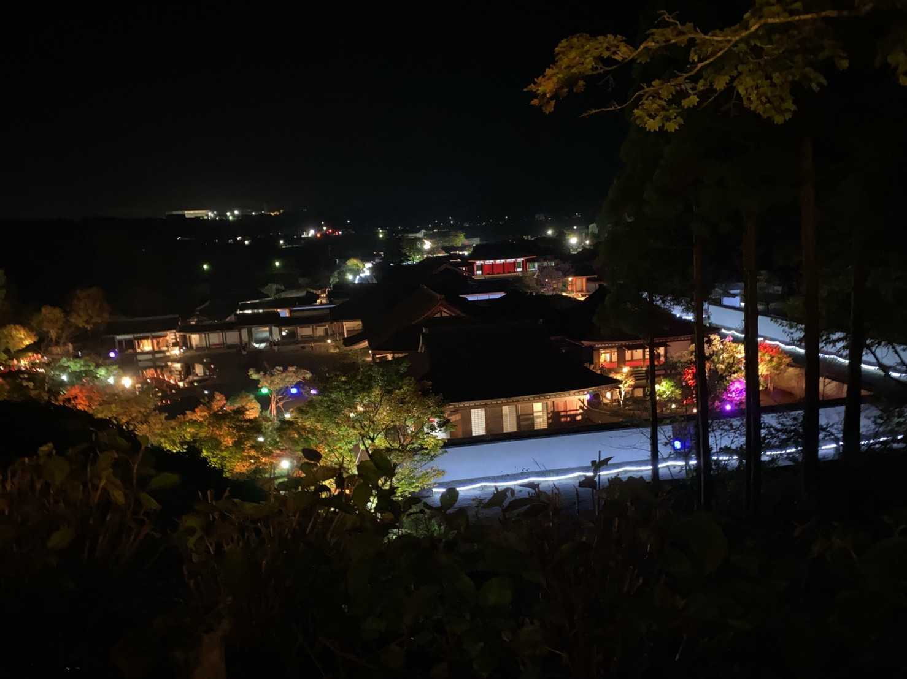

藤原の郷紅葉ライトアップ



平安建築を再現したテーマパーク「歴史公園えさし藤原の郷」で、ライトアッ
された紅葉が彩る幻想的な園内が楽しめるほか、迫力あるプロジェクションマ
ッピングも見応えがあります。建物の中では、時代衣装や鎧の着付、弓矢や貝
合わせなど様々な体験で楽しむことができます。カラフル影絵ライトもおすす
めスポットです。ご家族、ご友人とお出かけくださいませ！
観光情報
ジャンル
イベント
所在地
岩手県奥州市江刺岩谷堂字小名丸86-1
電話番号
0197-35-7791
営業日
年中無休
[アクセス経路]
水沢江刺駅から車で約15分
いわて花巻空港から車で約50分
水沢ICから車で約15分